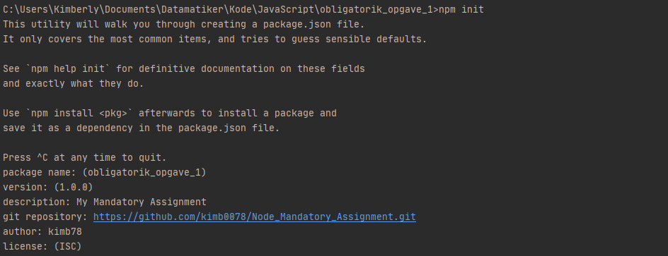

Når man installerer Node.js på sin computer, gør man det muligt at importere custom libraries, kaldet for moduler, som giver JavaScript flere funktionaliter end selve JavaScript-sproget tillader. Der bliver som nævnt importeret JavaScript-filer med funktioner, som kalder C++ metoder i V8.
Man finder kommandoerne, vejledning og kodeeksempler til de forskellige moduler på npm er en 'open source' package manager til Node.js, hvor udviklere frit kan dele JavaScript kode og moduler. npm, Inc., blev opkøbt af Github i 2020.
Man installerer npm ved at indtaste kommandoen "npm init" i terminalen:
Dette tilføjer package.json-filen og mappesystemet. Hver modul har sin egen mappe med forskellige filer, som vil bruges til at installere den, alt efter hvilken kommando er blevet indtastet i terminalen.
Man installerer en modul ved at indtaste "npm install " efterfulgt af modulens navn. Alternativt kan man kopiere kommandoen fra npmjs.com siden
Her er nogle eksempler på moduler, som jeg har installeret til denne webside.
Som i Express-eksemplet nedenfor, kan det se sådan ud:
Man skriver "npm i express" i terminalen, som følgende:
Som man kan se på billedet, blev der tilføjet 50 packages fra 37 forskellige brugere, da modulerne i NPM er 'open source'.